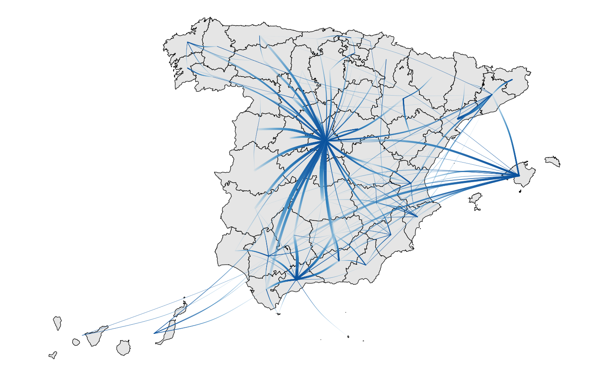

Use case: migration flows
example-usage.RmdIn this use case we show how to use tidycensus
to visualize the most important internal migration flows over the last
10 years.
First download the number of people by province of residence in 2011 and 2020.
library(tidycenso)
library(dplyr)
#>
#> Attaching package: 'dplyr'
#> The following objects are masked from 'package:stats':
#>
#> filter, lag
#> The following objects are masked from 'package:base':
#>
#> intersect, setdiff, setequal, union
df <- get_censo("per.ppal", c("ID_RESI_2011_N2", "ID_RESI_2020_N2"), "SPERSONAS")
head(df)
#> ID_RESI_2011_N2 ID_RESI_2020_N2 SPERSONAS
#> 1 02 Albacete 02 Albacete 324174
#> 2 02 Albacete 03 Alicante/Alacant 3849
#> 3 02 Albacete 04 Almería 366
#> 4 02 Albacete 01 Araba/Álava 72
#> 5 02 Albacete 33 Asturias 162
#> 6 02 Albacete 05 Ávila 42We then do some data wrangling estimate the net flows, and select the largest ones.
df <-
df %>%
filter(
ID_RESI_2011_N2 != "No consta",
ID_RESI_2020_N2 != "No consta",
) %>%
mutate(across(c(ID_RESI_2020_N2, ID_RESI_2011_N2), ~substr(., 1, 2)))
entries <-
df %>%
rename(to = ID_RESI_2020_N2, from = ID_RESI_2011_N2)
exits <-
df %>%
rename(from = ID_RESI_2020_N2, to = ID_RESI_2011_N2) %>%
mutate(SPERSONAS = -SPERSONAS)
net_flows <-
rbind(entries, exits) %>%
group_by(from, to) %>%
summarise(SPERSONAS = sum(SPERSONAS)) %>%
filter(
SPERSONAS > 0,
!from %in% c("Ex", "No"),
!to %in% c("Ex", "No")
) %>%
ungroup() %>%
slice_max(SPERSONAS, prop = .10)
#> `summarise()` has grouped output by 'from'. You can override using the
#> `.groups` argument.With the estimated net migration flows, we can now visualize them
We’ll use tidygraph
and ggraph
to create the graph, ggplot2 to
visualize it and mapSpain
to download the geometries of the provinces.
library(tidygraph)
#>
#> Attaching package: 'tidygraph'
#> The following object is masked from 'package:stats':
#>
#> filter
library(ggraph)
#> Loading required package: ggplot2
library(mapSpain)
library(ggplot2)
library(sf)
#> Linking to GEOS 3.10.2, GDAL 3.4.1, PROJ 8.2.1; sf_use_s2() is TRUE
sf_provs <- esp_get_prov() %>%
select(cpro, ine.prov.name)
nodes <-
sf_provs %>%
st_centroid() %>%
st_coordinates() %>%
as.data.frame() %>%
mutate(id = sf_provs$cpro)
#> Warning: st_centroid assumes attributes are constant over geometries
graph <- tbl_graph(nodes, edges = net_flows, node_key = "id", directed = T)
coord_layout <-
create_layout(
graph = graph,
layout = "manual",
x = nodes$X,
y = nodes$Y
)Once we have created the graph and the layout for it, we can use ggplot2 to
visualise it.
p <-
ggraph(coord_layout) +
geom_sf(data = sf_provs, color = "black", fill = "grey90") +
geom_edge_arc(
aes(
width=SPERSONAS,
alpha = after_stat(index),
color = after_stat(index)
),
lineend = "round", n = 200,
strength = .1) +
scale_edge_width_continuous(range=c(0.1, 1.5)) +
scale_edge_color_gradientn(colors = scales::brewer_pal("seq", direction = 1)(5)[3:5]) +
scale_edge_alpha(range = c(.05, 1)) +
theme_void() +
theme(legend.position = "none")
p
#> Warning: Using the `size` aesthetic in this geom was deprecated in ggplot2 3.4.0.
#> ℹ Please use `linewidth` in the `default_aes` field and elsewhere instead.
#> This warning is displayed once every 8 hours.
#> Call `lifecycle::last_lifecycle_warnings()` to see where this warning was
#> generated.